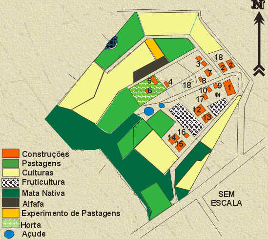

MAPA DO COLÉGIO


 1 - Prédio principal 1 - Prédio principal |
10 - Garagem |
| 2 - Alojamentos |
11 - Depósito de cebolas |
| 3 - Estábulo(Bovinocultura) |
12 - Aviário de corte |
| 4 - Aprisco (Onivocultura) |
13 - Aviário de postura |
| 5 - Estufa (Horta) |
14 - Suinocultura - terminação |
| 6 - Casa de Ferramentas (Horta) |
15 - Suinocultura - maternidade |
| 7 - Marcenaria |
16 - Abatedouro |
| 8 - Aprisco (Caprinocultura) |
17 - Cunicultura |
| 9 -Garagem, depósitos e fábrica de ração |
10 - Silos |